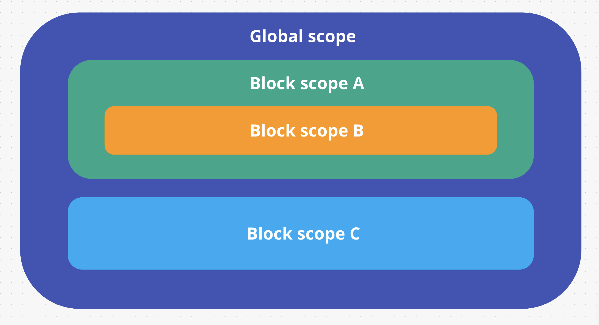

Variable scope
Zakres widoczności zmiennych (variable scope) - tak określamy
dostępność zmiennych w określonym miejscu kodu.
Globalny variable scope jest używany domyślnie. Wszędzie mamy dostęp
do zadeklarowanej w nim zmiennej. Na przykład zmienna value,
zadeklarowana w zasięgu globalnym, czyli poza jakimkolwiek blokiem,
będzie dostępna w dowolnym miejscu w kodzie.
const value = 5;
if (true) {
console.log("Block scope: ", value);// 5
}
console.log("Global scope: ", value);// 5
Wszystkie konstrukcje używające nawiasów klamrowych {} (warunki,
pętle, funkcje itp.) tworzą nowy zakres lokalny, a zmienne
zadeklarowane w tym zakresie przy użyciu let lub const nie są
dostępne poza tym blokiem.
if (true) {
const value = 5;
console.log("Block scope: ", value);// 5
}
console.log("Global scope: ", value);// ReferenceError: value is not defined
Głębokość zagnieżdżania zakresów nie jest ograniczona i niezależnie
o niej, zakresy będą działać zgodnie z jedną zasadą - scope ma
dostęp do wszystkich zadeklarowanych zmiennych, które znajdują się
wyżej w hierarchii zagnieżdżania, ale nie ma dostępu do zmiennych
zadeklarowanych w zagnieżdżonych w nim zakresach.
Stwórzmy kilka zakresów i nadajmy im nazwy dla jasności.

-
Globalny zakres jest ustawiony domyślnie, stwórzmy w nim zmienną
global
-
Wykorzystajmy operator if dla utworzenia zakresu bloku block A
-
Wewnątrz zakresu block A stwórzmy jeszcze jeden operator if, który
utworzy zakres bloku block B
-
Na tym samym poziome z block A, stwórzmy zakres bloku block C
wykorzystując ten sam operator co wcześniej czyli if
const global = "global";
if (true) {
const blockA = "block A";
// Możemy użyć globalnego zakresu i lokalnego zakresu A
console.log(global);// 'global'
console.log(blockA);// block A
// Zmienne blockB i blockC nie są odznalezione w dostępnych zakresach.
// Pojawi się błąd wykorzystania zmiennej.
console.log(blockB);// ReferenceError: blockB is not defined
console.log(blockC);// ReferenceError: blockC is not defined
if (true) {
const blockB = "block B";
// Możemy użyć globalnego zakresu + zewnętrznego A + lokalnego B
console.log(global);// global
console.log(blockA);// block A
console.log(blockB);// block B
// Zmienna blockC nie jest odnaleziona w dostępnych zakresach.
// Pojawi się błąd wykorzystania zmiennej.
console.log(blockC);// ReferenceError: blockC is not defined
}
}
if (true) {
const blockC = "block C";
// Możemy użyć globalnego zakresu + lokalnego C
console.log(global);// global
console.log(blockC);// block C
// Zmienne blockA i blockB nie są odnalezione w dostępnych zakresach.
// Pojawi się błąd wykorzystania zmiennej.
console.log(blockA);// ReferenceError: blockA is not defined
console.log(blockB);// ReferenceError: blockB is not defined
}
// Użyjmy tylko globalnego zakresu
console.log(global);// global
// Zmienne blockA, blockB i blockC
// nie są odznalezione w dostępnych zakresach.
// Pojawi się błąd wykorzystania zmiennej.
console.log(blockA);// ReferenceError: blockA is not defined
console.log(blockB);// ReferenceError: blockB is not defined
console.log(blockC);// ReferenceError: blockC is not defined
Bądź czujny wykorzystując zakresy bloków i zmiennych utworzonych
wewnątrz tych zakresów. Często właśnie dostępność i zakresy stanowią
duży problem dla osób początkujących